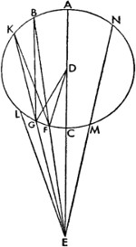
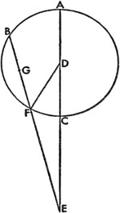

34. Beş Gezegenin Boylamdaki Konumları Nasıl Hesaplanır?

Böylece tarafımızca bu şekilde çizilen tablolar sayesinde, herhangi bir zorluk yaşamadan gezici beş yıldızın boylamdaki konumlarını hesaplayabileceğiz. Her ne kadar dıştaki üç gezegen bu kapsamda Venüs ile Merkür'den farklıysa da hepsi için üç aşağı beş yukarı aynı yöntem söz konusudur. Buna göre evvela Satürn, Jüpiter ve Mars'tan söz edelim. Bu gezegenlerle ilgili hesaplama şu şekilde olur: Belirli bir zaman diliminde ortalama hareketler, yani Güneş'in basit hareketi ve gezegenin paralaks hareketi yukarıda açıklanan yöntemle bulunur. Daha sonra dış merkezli çemberin en yüksek apsidi, Güneş'in basit konumundan; paralaks hareketi de kalan kısımdan çıkarılır; ilk kalan gezegenin dış merkezli çemberinin ayrıklığı olur. Elde edilen rakamı, tablonun ilk sütununda yer alan genel rakamlar arasında arayıp buluruz; bununla alakalı olarak üçüncü sütunda dış merkezli çemberin eşitlemesini ve bir sonraki sütunda orantılı dakikaları bulmuş oluruz. Tabloya girdiğimiz rakam ilk sütunda bulunuyorsa, bu eşitlemeyi paralaks ayrıklığının hareketine ekler, dış merkezli çemberin ayrıklığından çıkarırız; rakam ikinci sütunda bulunuyorsa, bu sefer rakamı dış merkezli çemberin ayrıklığından çıkarırız. Toplam ya da kalan, paralaksın ya da dış merkezli çemberin düzeltilmiş ayrıklığı olacaktır; bir tarafa bıraktığımız orantılı dakikalardan ise biraz sonra bahsedeceğiz. Daha sonra bu düzeltilmiş ayrıklığı genel rakamlardan oluşan ilk iki sütunda ararız; beşinci sütunda buna karşılık gelen yerden, paralaks hareketinden kaynaklanan eşitlemeyi son sütundaki fazlalığıyla birlikte alır, bu artışa denk gelen orantılı dakikayı da hesaba katıp bu orantılı parçayı her daim eşitlemeye ekleriz. Toplam, gezegenin hakiki paralaksı olacaktır; ayrıca düzeltilmiş ayrıklık bir yarım çemberden küçükse buradaki toplam, paralaksın düzeltilmiş ayrıklığından çıkartılır, büyükse ona eklenir. Bu şekilde gezegenin batı yönünde, Güneş'in ortalama konumundan hakiki ve görünen mesafesini elde ederiz; bu mesafeyi Güneş'in ortalama konumundan çıkardığımızda kalan, gezegenin sabit yıldızlar küresinde aranan konumu olacaktır; ekinoksların devinmesinin eklenmesi ise gezegenin ilkbahar ekinoksuna göre konumunu belirleyecektir. Venüs ve Merkür'le ilgili olarak da en yüksek apsitten Güneş'in ortalama konumuna kadarki mesafeyi dış merkezli çemberin ayrıklığı olarak kullanacağız; bu ayrıklık sayesinde paralaks hareketini ve yukarıda da söylediğimiz gibi dış merkezli çemberin ayrıklığını düzelteceğiz. Eğer dış merkezli çemberin ve düzeltilmiş paralaksın eşitlemesi aynı cinstense, ikisi de Güneş'in ortalama konumundan çıkarılır ya da ona eklenir. Fakat farklılarsa, küçük olan büyüğünden çıkarılır; kalan sayesinde bahsetmiş olduğumuz durum meydana gelecektir; daha büyük olan rakamın artırıcı ya da eksiltici niteliğine göre sonuç aradığımız konum olacaktır.
35. Beş Gezici Yıldızın Durakları ve Gerilemeleri Üzerine
Dahası gezegenlere ait durakların, gerilemelerin ve bulundukları konumlara geri dönüşlerinin nerede, ne zaman gerçekleştiğinin ve ne kadar sürdüğünün boylamdaki hareketle alakalı olduğu görülüyor. Matematikçiler, özellikle de Pergeli Apollonius, bu hesaplarla hiç de az uğraşmamıştır; ancak bunu yalnızca bir düzensiz harekete göre –gezegenlerin yalnızca Güneş'e göre hareket ettikleri varsayımıyla– ve bizim Dünya'nın büyük yörünge çemberinden ötürü paralaks dediğimiz harekete göre yapmışlardır. Buna göre gezegenlerin –tamamının farklı periyotlarla ama aynı yöne, yani doğuya doğru devindikleri– çemberleri Dünya'nın büyük yörünge çemberiyle eş merkezliyse ve herhangi bir gezegen kendi yörünge çemberinde ve büyük yörünge çemberi içinde –örneğin Venüs ve Merkür gibi– Dünya'dan daha hızlı bir harekete sahipse ve Dünya'dan çizilecek bir düz çizgi gezegenin yörünge çemberini, yörünge çemberi içinde kalan parçanın yarısı Dünya'daki görüş noktamızdan –kesilmiş yörünge çemberinin aşağı ve dışbükey yayına doğru– uzanan çizgiyle aynı orana sahip olacak şekilde –tıpkı Dünya'nın hareketinin gezegenin hızına oranında olduğu gibi– keserse ve bir nokta gezegen çemberinin yerberisindeki yaya doğru çizilen bu çizginin ucundaysa, o halde bu nokta gerilemeyi ilerlemeden ayıracak, yani gezegen bu konumdayken duruyormuş gibi görünecektir. Benzer durum Dünya'dan daha yavaş bir şekilde devinen dıştaki üç gezegen için de geçerlidir. Görüş açımızdan çizilecek bir düz çizgi büyük yörünge çemberini, yörünge çemberi içinde kalan parçanın yarısı, gezegenden yörünge çemberinin yakın tarafında ve dışbükey yüzeyinde yer alan görüş noktamıza uzanan çizgiyle aynı orana sahip olacak şekilde keserse –tıpkı gezegenin hareketinin Dünya'nın hızına oranında olduğu gibi– gezegen bu konumdayken bize duruyormuş gibi görünecektir. Fakat söylediğimiz gibi, çemberin içte yer alan kesitin yarısının dışta kalan kesite oranı, Dünya'nın hızının Venüs'ün ya da Merkür'ün hızına veyahut diğer üç gezegenin hızının Dünya'nın hızına oranından daha büyükse gezegen doğuya doğru ilerliyor, daha küçükse batıya doğru geriliyor görünecektir.

Apollonius bütün bunları göstermek için, Dünya'nın hareketsizliğine dair hipotezle uyumlu olan, bunun yanında Dünya'nın hareketliliğine dayanan hipotezimizle de bağdaşan, bu yüzden kendisinden istifade edeceğimiz kesin bir ön kuram geliştirdi. Bunu şu şekilde ifade edebiliriz: Bir üçgenin daha büyük olan kenarı, parçalardan biri bitişik kenardan daha küçük olmayacak şekilde kesilirse bu parçanın diğer parçaya oranı, kesilen kenardaki açılardan –ya da tam tersi durumda ikincisi birincisinden– daha büyük olacaktır. Buna göre BC, ABC üçgeninin daha büyük kenarı olsun; BC kenarında CD, AC'den küçük olursa, CD'nin BD'ye oranının, ABC açısının BCA açısına oranından büyük olduğunu söyleyebiliriz. Bu şu şekilde de gösterilir: ADCE paralelkenarı oluşturulsun ve uzatılan BA ve CE, E noktasında birleşsin. Buna göre AE, AC'den küçük olduğu için merkezi A, yarıçapı AE olarak çizilen çember C'den geçecek ya da onun ötesine geçecektir. GEC bu çember olsun ve C'den geçsin. AEC üçgeni AEC kesitinden küçükken AEF üçgeni AEG kesitinden büyük olduğuna göre, AEF üçgeninin AEC üçgenine oranı, AEG kesitinin AEC kesitine oranından büyüktür. Fakat AEF üçgeninin AEC üçgenine oranı, FE tabanının EC tabanına oranına eşittir. Buna göre FE'nin EC'ye oranı FAE üçgeninin EAG üçgenine oranından büyüktür. Fakat FE'nin EC'ye oranı, CD'nin DB'ye oranına eşittir. FAE açısı, ABC açısına; EAC açısı da BCA açısına eşittir. Buna göre CD'nin DB'ye oranı ABC açısının ACB açısına oranından büyüktür. Bu durumda CD'nin AC'ye, onun da AE'ye eşit olduğu ve bunun yanında CD'nin AE'den büyük olduğu varsayılmazsa, aradaki oranın daha büyük olacağı açıktır. Buna göre ABC Venüs'ün ya da Merkür'ün D merkezi etrafındaki çemberi olsun ve çemberin dışındaki Dünya E, aynı D merkezi etrafında hareket edebilsin. Görüş açımız olan E'den, ECDA düz çizgisi çemberin merkezi boyunca çizilsin; A, Dünya'dan en uzak, C ise en yakın konum olsun. DC, CE'ye oranı, görüş açısının hareketine ait hızın gezegenin hızına oranından daha büyük olacak şekilde yerleştirilsin. Bu durumda BF'nin yarısının FE'ye oranı, görüş açısının hareketinin gezegenin hareketine oranıyla aynı olacak şekilde EFB çizgisini bulmak mümkündür. Bunun için EFB çizgisi D merkezinden hareket ettirilsin ve aradığımıza ulaşıncaya dek FB boyunca kısaltılsın, EF boyunca uzatılsın. Gezegen F noktasına yerleştirildiğinde, bize duruyormuş gibi görüneceğini söylemeye çalışıyorum; F'nin bir kenarına koyduğumuz yayın uzunluğu ne olursa olsun gezegeni, yerötenin yönündeyse ilerlerken, yerberinin yönündeyse gerilerken görürüz. Bunun için öncelikle FG yayı yerötenin yönünde alınsın: EGK uzatılsın ve BG, DG ve DF eklensin. Bu durumda BGE üçgeninde büyük BE kenarının BF parçası BG'den büyük olduğundan BF'nin EF'ye oranı, FEG açısının GBF açısına oranından büyüktür.
Dahası BF'nin yarısının FE'ye oranı, FEG açısının GBF açısının iki katına oranından büyüktür; yani BF'nin yarısının FE'ye oranı, FEG açısının GDF açısına oranından büyüktür. Fakat BF'nin yarısının FE'ye oranı Dünya'nın ve gezegenin hareketine eşittir. Buna göre FEG açısının GDF açısına oranı, Dünya'nın hızının gezegenin hızına oranından küçüktür. Bu durumda FEL açısının FDG açısına oranı, Dünya'nın hareketinin gezegenin hareketine oranına eşittir. O halde FEL açısı FEG açısından büyüktür. Buna göre gezegenin yörünge çemberinin GF yayını kat ettiği süre boyunca görüş çizgimizin, EF ile EL çizgileri arasındaki ters mesafeyi geçtiği düşünülecektir. Görüş açımıza göre GF yayının gezegeni, küçük FEG açısıyla uyumlu olarak batıya doğru taşıdığı aynı zaman diliminde; Dünya'nın geçişi, daha büyük olan FEL açısına uygun olarak onu geriye, doğuya doğru sürükler; böylece gezegen GEL açısıyla açısal mesafesini doğuya doğru artırmaya devam edecek ve henüz durmamış görünecektir. Bu durumda bunun zıddı benzer biçimde gösterilebilir. Aynı şekilde GK'nin yarısının GE'ye oranını Dünya'nın hareketinin gezegenin hızına oranına eşitlersek ve GF yayını yerberi yönünde, EK düz çizgisinden uzakta alıp KF'yi ekleyerek GE'nin EF'den büyük olduğu KEF üçgenini oluşturursak; KE'nin GE'ye oranı, FEG açısının FKG açısına oranından küçük olur. Aynı zamanda KG'nin yarısının GE'ye oranı, FEG açısının FKG açısının iki katına oranından küçük olur; yani yukarıda gösterildiğinin aksine KG'nin yarısının GE'ye oranı FEG açısının GDF açısına oranından küçüktür. Buradan aynı şekilde GDF açısının FEG açısına oranının, gezegenin hızının görüş çizgisinin hızına oranından küçük olduğu sonucu çıkar. Buna göre GDF açısı, açılar aynı orana sahip olacak ölçüde daha büyük kılındığında, gezegen batıya doğru ilerlemenin gerektirdiğinden daha büyük bir devinimi tamamlayacaktır. Buradan hareketle, FC yayını CM yayına eşitlersek ikinci durağın M noktasında olacağı açıktır; EMN çizgisi çizilirse MN'nin yarısının ME'ye oranı, BF'nin yarısının FE'ye oranına, o da Dünya'nın hızının, gezegenin hızına oranına eşit olur; bu durumda M ile F noktaları iki durağı belirleyecek ve tüm FCM yayını gerileme, kalan kısmı ise ilerleme olarak saptayacaktır. Dahası, kesin uzaklıklarda DC'nin CE'ye oranının Dünya'nın hızının, gezegenin hızına oranından küçük olduğu da anlaşılır; bu oranda başka bir düz çizgi çizmek mümkün olmayacaktır; gezegen duruyor ya da geri gidiyor görünmeyecektir. Buna göre DEG üçgeninde DC'nin EG'den küçük olduğu varsayıldığından, CEG açısının CDG açısına oranı, DC'nin CE'ye oranından küçüktür. Fakat DC'nin CE'ye oranı, Dünya'nın hızının gezegenin hızına oranından büyüktür. Bunun yanında CEG açısının CDG açısına oranı da Dünya'nın hızının gezegenin hızına oranından küçüktür. Bunlar olurken gezegen ilerleyecek ve yörünge çemberinin herhangi bir yerinde gezegenin geri gidiyor gibi göründüğü bir yay bulamayacağız. Bütün bunlar Dünya'nın büyük yörünge çemberinin içindeki Venüs ve Merkür'le alakalıdır. Aynı yöntem ve şekillerle, dıştaki üç gezegenle ilgili olarak da sadece isimleri değiştirerek kanıtlama yapabiliriz; öyle ki ABC'yi Dünya'nın büyük yörünge çemberi ve görüş açımızın çevrimi olarak; kendi yörünge çemberindeki hareketi büyük yörünge çemberindeki görüş açımızın hızından daha küçük olan gezegeni de E'de alabiliriz. Gösterimin geri kalanı da tümüyle yukarıdaki gibi gelişecektir.
36. Gerilemelerin Zamanları, Konumları ve Yayları Nasıl Hesaplanır?
Gezici yıldızları taşıyan yörünge çemberleri büyük yörünge çemberiyle eş merkezli olsaydı, gezegenin hızının görüş noktamızın hızına oranının her daim aynı kaldığına dair kanıtlar kolayca ortaya konabilirdi. Fakat yörünge çemberleri dış merkezlidir, bu yüzden hareketleri de düzensiz görünür. O halde düzensiz ve düzeltilmiş hareketleri her yerde hız farkları olarak kabul etmemiz ve kanıtlarda kullanmamız gerekecek; sadece gezegen ortalama boylamındayken, yörünge çemberinde ortalama hareketiyle taşınıyor görüldüğü konum hariç.
Burada bunu Mars'la ilgili olarak göstereceğiz; böylece diğer gezegenlerin geri dönüşleri, bu örnek sayesinde daha anlaşılır olacak. Bunun için ABC, görüş noktamızın döndüğü büyük yörünge çemberi olsun, gezegen de E noktasında yer alsın. ECDA çizgisi gezegenden, yörünge çemberinin merkezinden geçecek şekilde çizilsin; bunun yanında EFB de çizilsin; BF yarımının EF'ye oranı, gezegenin hızının gezegeni aşan görüş noktamızın hızına oranından farklı olacaktır. Buradaki problemimiz, hangi açının FEC tarafından oluşturulduğunu ve gezegenin sabitleştiği A noktasından itibaren en uzak konumunun ne kadar mesafede olduğunu bulabilmek için FC gerileme yayını ya da ABF'yi bulmaktır. Bu sayede gezegenin böylesi bir yöneliminin zamanını ve konumunu önceden söyleyebileceğiz. Buna göre gezegen, boylamın ve ayrıklığın hareketlerinin düzenli hareketlerden çok az farklılık gösterdiği dış merkezli çemberin ortalama apsidinde yer alsın. Buna göre Mars gezegenine ait ortalama hareket 1p8º7'' olduğundan, bakış açımızın yıldızın ortalama hareketiyle ilişkisi olan paralaks hareketi bir parçadan oluşur ve o da EF düz çizgisidir. Buradan hareketle EB, 3p16'14'', benzer şekilde BE, EF çarpımı 3p16'14''dir. Buna göre DE 10.000 birimken, DA'nın 6580 birim olduğunu göstermiş olduk; DA da yörünge çemberinin yarıçapıdır. Fakat DE 60p iken, DA 39p29'dır; AE'nin EC'ye oranı da 99p29'nın 20p31'ya oranına eşittir. Ve AE, EC çarpımı, BC, EF çarpımına, o da 2041p4'ya eşittir. İndirgemeyle 2041p4'nın 3p16'14''ye oranı 624p4'ya ve benzer şekilde DE 60p iken EF kenarı 24p58'52''ye eşittir. Fakat DE 10.000, DF 6580 birimken EF 4163 birimdir. Buna göre DEF üçgeninin kenarları bulunmuş olur; DEF açısı, gezegenin açısal geri dönüşü olan 27º15'ya; CDF ise paralaksın açısal ayrıklığı olan 16º50'ya eşittir. O halde gezegen ilk durakta olarak sabitken EF çizgisinde; Güneş'in karşısındayken EC'de belirir. Gezegen doğuya doğru hareket etmezse, CF yayının 16º15'sı, gerileme olarak bulunan AEF açısının 27º25'sını içerecek; fakat ortaya konan gezegenin hızının bizim görüş noktamızın hızına oranına göre, 16º5' paralaksın ayrıklık kesitine ve 19º6'39''da yaklaşık olarak gezegenin boylamının ayrıklık kesitine karşılık gelir. Bu durumda 27º15'nın 19º6'39''den farkı 8º8'dır; bu da diğer duraktan Güneş karşı konumuna kadarki mesafe olup burada yaklaşık 36,5 gün vardır ki bu sürede boylamdaki ayrıklık 19º6'39'', dolayısıyla toplam gerileme 73 günde 16º16'dır. Dış merkezli çemberin ortalama boylamlarına dair gösterilmiş olan bu hususlar benzer şekilde diğer konumlar için de ortaya konabilir; söylediğimiz gibi aranan konuma göre gezegenin hızının her daim değiştiği varsayılır. Buradan hareketle gezegen yerine görüş noktasını, görüş noktası yerine de gezegeni kullanmak şartıyla Satürn, Jüpiter ve Mars için de aynı gösterim yöntemi geçerlidir. Dünya'nın çevrelediği yörünge çemberlerinde beliren, Dünya'yı çevreleyen yörünge çemberlerinde de belirir: O halde aynı eski şarkıyı tekrar okumayalım ve bu kadarı yeterli olsun. Apollonius'un, görüş noktasına ve duraklama noktalarının belirsizliğine bağlı gezegenin değişken hareketine dair teoremi bize pek kolaylık sağlamadığından, gezegenin kavuşumunu, Güneş'in ortalama hareket çizgisiyle Güneş'in karşısında bulunduğu durumu ya da gezegenlerden herhangi birinin kavuşumunu hareketlerinin bilinen sayıları yardımıyla incelediğimiz yöntemle durakları basitçe ve en yakın konumla bağlantılı olarak incelemenin daha yararlı olup olmayacağını bilemiyorum; bunu da sizlerin keyfinize bırakıyoruz.
Beşinci kitabın sonu.[165]